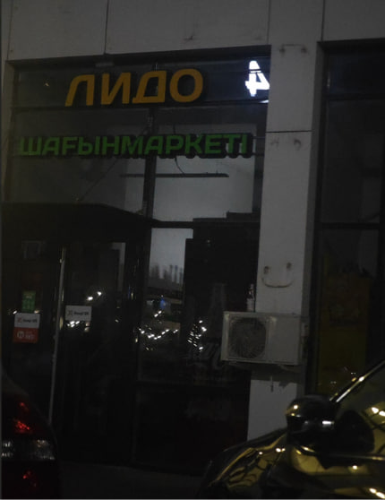

About Us

Our Products
Lido has a big range of commodities offered in various departments. People may purchase dairy products, bread, beverages, frozen products, sweets, fruits, vegetables, meat, and cleaning materials. The supermarket also contains a section of non-food commodities such as toys, socks, and accessory items. More details on these sections can be found on the Products page.
Opening Hours
Lido Grocery Store is open 24/7, which makes it convenient for customers who need to buy groceries early in the morning, during the day, or late at night.
The store can be used both for quick purchases and for larger everyday shopping.
About This Website
A website has been made to provide basic information regarding Lido Grocery Store. People can find out about various product categories, see different prices at the store, and get some meaningful information about the store as well. The information presented in this website is dependent on our visit to the store and the information that we collected from there.